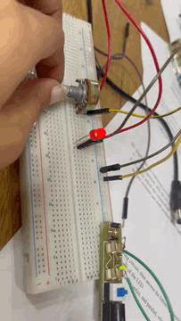

In this lab we will have 2 stages .
- First: Interface with "Basic Electronic Compnents".
- Second: we will use "ICs".(555 IC & Counter IC)
Content Of The First Stage:
circuit #1

Hardware connection:

How does this circuit work?
- first we need to bring the data sheet in order to know how much voltage & current the led needs. It's in "2.1v" range && "20 mA" , so we conclude that if we connected the 9v supply directly to the led it will burn out , here comes the role of the Potentiometer and by changing its value the voltage drop across the led changes and the net current changes
- We conclude that we control the intensity of the led by using Potentiometer.
If we replaced the Potentiometer with fixed resistance we need to calculate its value.
Side note : the intensity will be constant.
Given data:
- Vled=2V
- Iled=20mA
Since connection is series.Therfore, the current is constant for the whole circuit =20mA
- Using Ohm's Law .(R=V/I)
- R=(9-2)V/20mA= 350 ohm.
circuit #2

Hardware connection:
.gif)
How does this circuit work?
- After Implementing this circuit we will figure out that it represent xor gate, cuz the led only turn on when the 2 switches opposite to each other.
If we need to make the opposite functionality and let the led on only when they are the same
We will change the connections of the 2 legs of the switches
- left leg of the first -> left leg of the second
- right leg of the first -> right leg of the second

circuit #3

How does this circuit work?

- As we see in the pic, the capacitor charges first then discharge it in few secondes depends on the capacitance. But when u connect the 3 components in the circuit together u will see the led flashes only for a sec then turns off that happens because the capacitor works as a short circuit when it's fully charged (no change & equal V) in Dc signals but u can make the led turn on for more few seconds by bringing a capacitor with bigger capacitance ex:100 microF.
If u bring 2 capacitors connect them series then connect them parallel as shown in the fig:

- We know that capacitance in series are treated like Resistance in parallel state and vice versa so the capacitance value decreases, so the led switches off faster
- By connecting them parallel the capacitance value increases so the led switches on for longer secs
circuit #4

Hardware connection:
.gif)
- Potentiometer-> used to change the trigger point for the LED
- LDR-> Variable resistance that get affected by light .
- Transistor-> Worls as a switch.
- R2-> controls the amount of current going through the LED.
How does this circuit work?
"This circuit Works as lightning system in street".
In order to understand more how it works first we should know the functionality of each Compnent
- Light on -> Led off.
- Light off-> Led on.

- Light on -> Led on.
- Light off-> Led off.
circuit #5

How does this circuit work?
- R2-> controls the value of IB and In order not to make short circuit on R1 (IC=0)
- switch-> controls the transistor
- R3-> controls the amount of current going through the LED.
- R1->USE For Biasing
by pushing down the switch the VBE has value so transistor switches on and by leaving the switch off the transistor becomes off
- Pressing on switch->led on
- Not Pressing on switch->led off
*Fun Fact*: you can replace R2 and put your fingers instead on the wire

circuit #6

Hardware connection:
.gif)
Functionality of the components:
- Capacitors->regulates and smoothes the signal output. Also, controls the output signal frequency due to its discharging time.
- Transistors->make square signal by switching on and off
Works as an oscillator as we see

- Assume 9 volt supply and that transistor, TR1 has just switched “OFF” (cut-off) and its collector voltage is rising towards Vcc, meanwhile transistor TR2 has just turned “ON”. Plate “A” of capacitor C1 is also rising towards the +9 volts supply rail of Vcc as it is connected to the collector of TR1 which is now cut-off. Since TR1 is in cut-off, it conducts no current so there is no volt drop across load resistor R1.
- The other side of capacitor, C1, plate “B”, is connected to the base terminal of transistor TR2 and at 0.6v because transistor TR2 is conducting (saturation). Therefore, capacitor C1 has a potential difference of +8.4 volts across its plates, (9.0-0.6v) from point A to point B.
- Since TR2 is fully-on, capacitor C2 starts to charge up through resistor R2 towards Vcc. When the voltage across capacitor C2 rises to more than 0.6v, it biases transistor TR1 into conduction and into saturation.
- The instant that transistor, TR1 switches “ON”, plate “A” of the capacitor which was originally at Vcc potential, immediately falls to 0.6 volts. This rapid fall of voltage on plate “A” causes an equal and instantaneous fall in voltage on plate “B” therefore plate “B” of C1 is pulled down to -8.4v (a reverse charge) and this negative voltage swing is applied the base of TR2 turning it hard “OFF”. One unstable state.
- Transistor TR2 is driven into cut-off so capacitor C1 now begins to charge in the opposite direction via resistor R3 which is also connected to the +6 volts supply rail, Vcc.